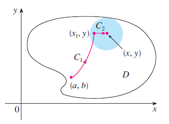

CÁLCULO VETORIAL · AULAS 51–55
Campos conservativos, rotacional, divergente e Teorema de Green
Potenciais, independência do caminho, Teorema Fundamental das Integrais de Linha, Green, rotacional e divergente.
1. Campo conservativo
\[\mathbf F=\nabla f.\]
A função \(f\) é chamada potencial.
2. Teorema Fundamental das Integrais de Linha
\[\int_C\nabla f\cdot d\mathbf r=f(B)-f(A).\]
O resultado depende apenas dos extremos.

Exemplo resolvido.
Para \(\mathbf F=\langle2x,2y\rangle\), um potencial é \(f=x^2+y^2\). De \((0,0)\) a \((1,2)\),
\[\int_C\mathbf F\cdot d\mathbf r=5.\]
3. Teorema de Green
\[\oint_CP\,dx+Q\,dy=\iint_D\left(\frac{\partial Q}{\partial x}-\frac{\partial P}{\partial y}\right)dA.\]
4. Rotacional
Mede a tendência local de rotação do campo.
\[\nabla\times\mathbf F.\]
5. Divergência
\[\nabla\cdot\mathbf F=\frac{\partial P}{\partial x}+\frac{\partial Q}{\partial y}+\frac{\partial R}{\partial z}.\]
Valores positivos sugerem fonte local; negativos, sumidouro.
Visualização no GeoGebra 3D
Abrir GeoGebra 3D ↗Abra o ambiente 3D para explorar geometricamente os objetos relacionados a este conteúdo.
Material organizado a partir das aulas da GCT054 e da bibliografia indicada no Plano de Ensino, especialmente Stewart (2014), Anton, Bivens e Davis (2014) e Thomas, Weir e Hass (2013).